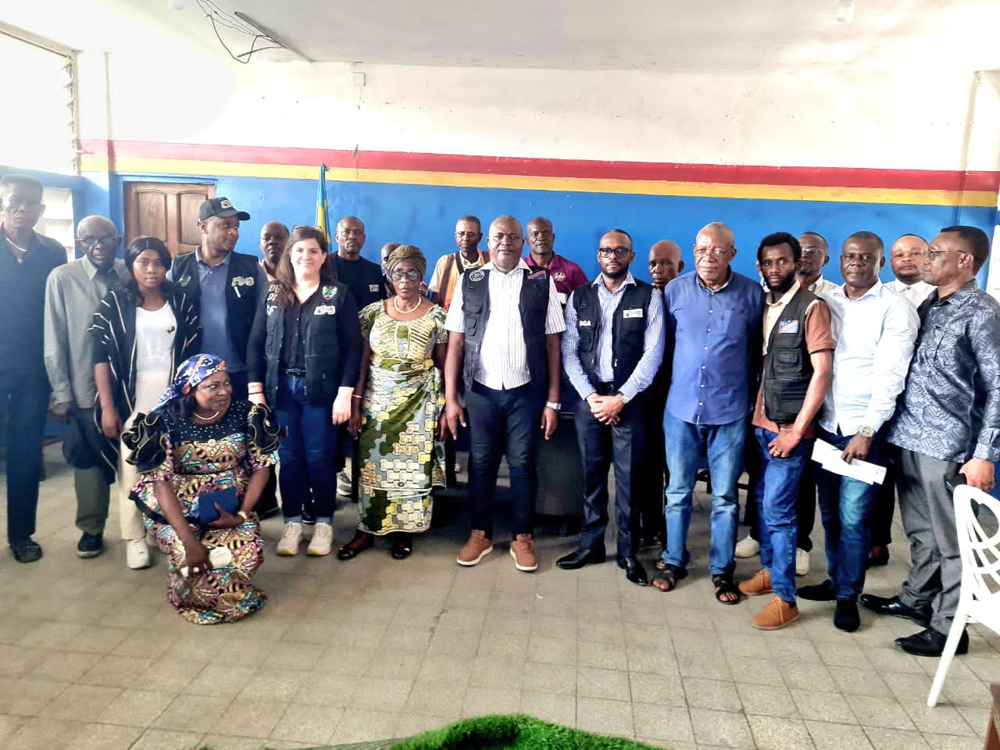
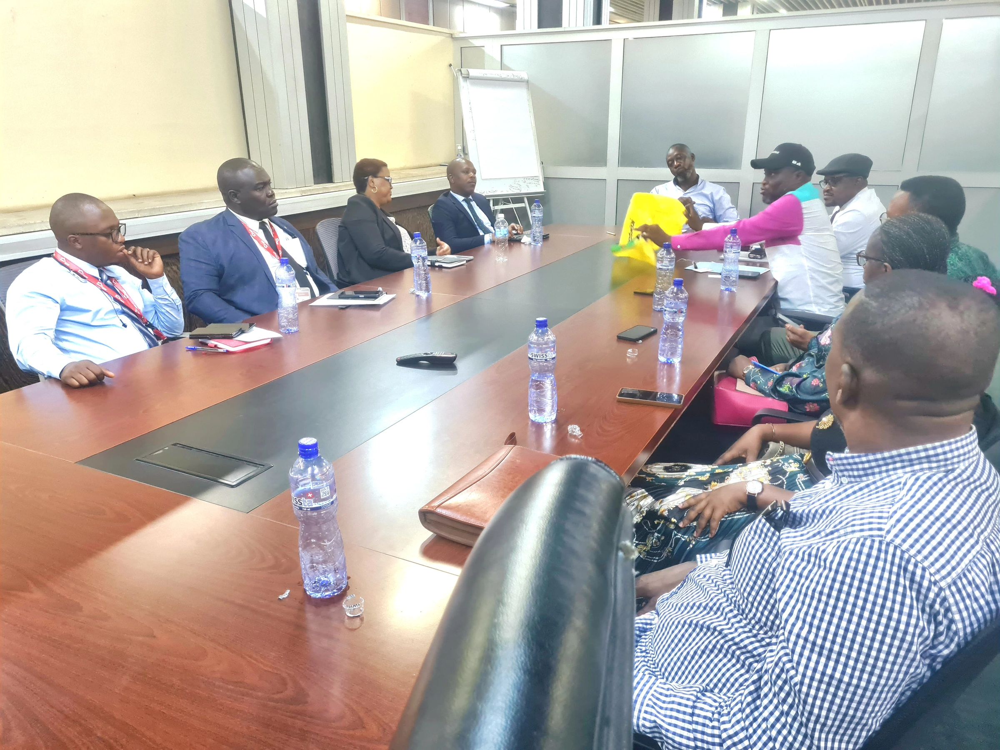
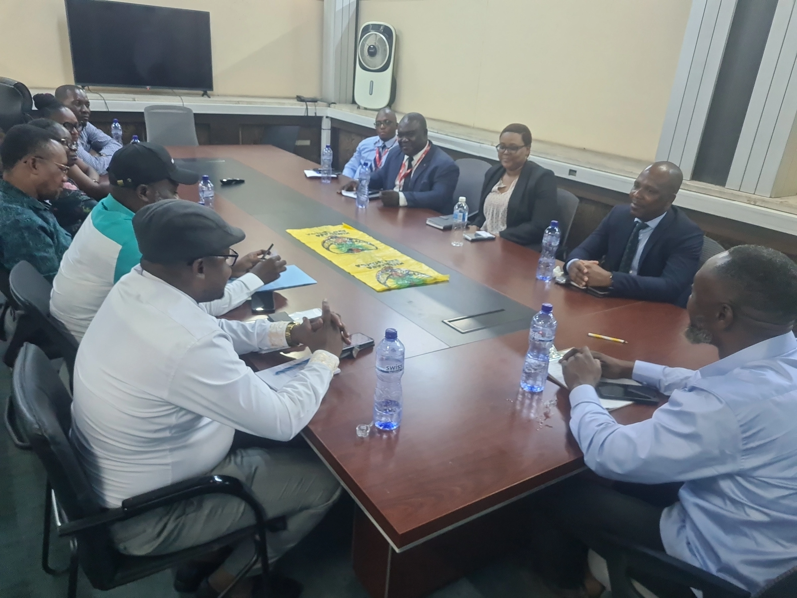
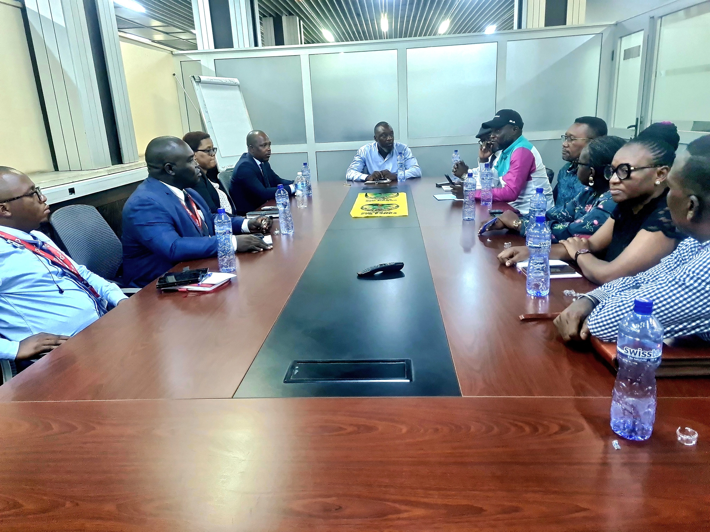
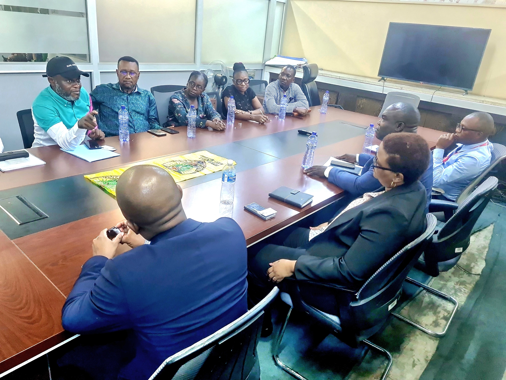
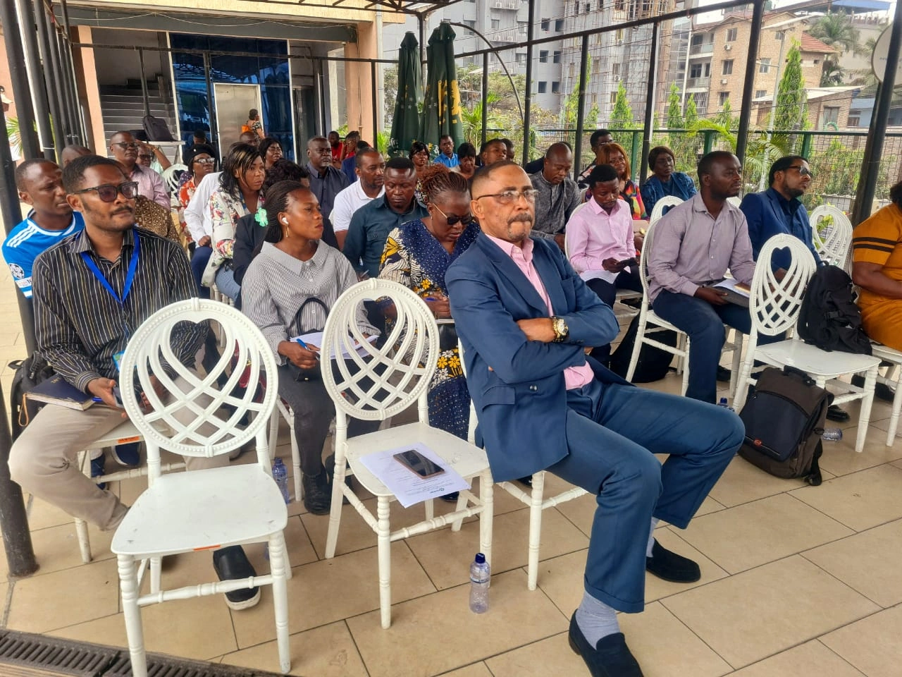

Retrouvez les comptes rendus des rencontres et les publications de la fédération.


À Ngiri-Ngiri, la bataille pour une commune propre se joue désormais sur le terrain
À Ngiri-Ngiri, autorités et acteurs de l’assainissement préparent le fonctionnement du centre de transfert des déchets. Retour sur la concertation du 21 octobre 2026.
Lire l’article







Les échanges entre les acteurs de la filière, en images
Une sélection de photographies des rencontres de la fédération.
Lire l’article
Valoriser les plastiques : une piste à examiner selon les usages
L’exemple des pavés de Gjenge Makers au Kenya illustre une possibilité de transformation, avec les exigences de qualité et de sécurité propres à chaque usage.
Lire l’article
Pourquoi éviter l’accumulation de déchets dans les caniveaux ?
Les déchets abandonnés gênent l’écoulement des eaux et dégradent les espaces de vie. Retrouvez les enjeux présentés sur le site et la source OMS.
Lire l’articleCollecte, gestion et valorisation : des activités complémentaires
Comprendre les liens entre les trois domaines d’activité représentés par la fédération.
Lire l’article



Première journée : ouvrir le dialogue entre les acteurs de la filière
À l’Hôtel Léon 2, à Kinshasa, une première rencontre de concertation a réuni les entreprises et les partenaires du secteur le 26 septembre 2026.
Lire l’article